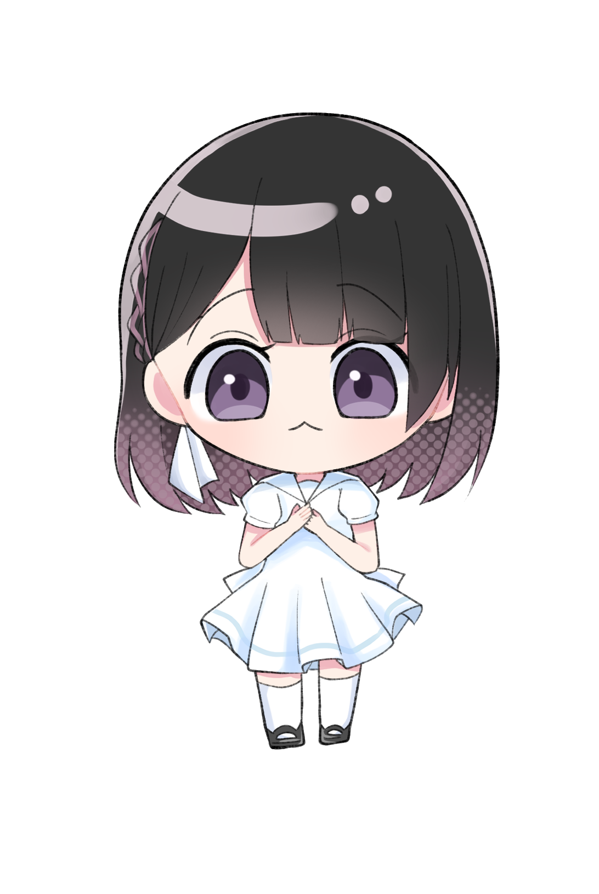

夢主について
・その他人物との関係
夢主設定
基本プロフィール
兄さんだいすき～| 名前 | モモ=ゾルディック |
|---|---|
| 年齢 | 18歳 |
| 血液型 | A型 |
| 身長 | 153cm ※イルミとは32cm差 |
| 体重 | 43kg |
| イメージCV | - |
| 好きな食べ物 |
✦ 性格・思考（モモ）✦
特徴 内容
従順／刷り込み済み イルミに逆らえない。自分の意思で依存しているわけではなく、幼少期からの刷り込みによる“無意識の服従”。
無能だけど努力はする 非力でドジだが、「兄さんの役に立ちたい」と筋トレや訓練などの努力はこっそりしている（でも報われない）。
自分に自信がない 何をしても「どうせ失敗する」と思っている。成功しても「運が良かっただけ」と自己評価が低い。
感情表現が未熟 怒り・恋愛・自己主張などの感情がよく分からない。喜怒哀楽はあるが、全体的に鈍く、無意識で他者に従う癖がある。
幼少期
念能力
| 念能力名 | 身代受願（イタイイタイノトンデケ） |
|---|---|
| 系統 | 操作系 |
| 能力の本質 | •痛み（≒神経信号／苦痛反応）を「対象」として操作する能力。 •“ダメージ”そのものではなく、“痛み”という感覚情報を任意の生物に移動・転送できる。 •本来は相手にぶつける（他人を苦しめる）ための能力だが、モモはそれができないため、自動的に自己犠牲型に発動してしまう。 |
| 発動条件 | •触れること •心から“助けたい”と願うこと •能力の使用対象が“痛み”を感じていること |
| 使用例 | ■イルミが骨折をする ↓ ■モモがイルミに触れて「イタイイタイノトンデケ」と唱える ↓ ■自分（モモ）に触れて、痛みを自分（モモ）に移動させる ↓ ■イルミの痛みは消え、見た目も完治する。 ⇒モモが対象者の痛みを全て引き受ける。 |
イルミとの関係
イルミ 支配と独占。 洗脳者 妹が自分に依存するよう、言葉・態度・環境で刷り込みを行っている。 例：「お前はホント無能だね。でもオレだけは捨てないから。」 "モモ"という存在が好き。無能で、何もできないモモそのものを気に入ってる。だからこそ、努力や成長を「無駄」と切り捨てる。 感情が表に出ない 「怖がらせてる」と自覚しながらも、それを止める気はない。支配欲の現れを“優しさ”として表現する。 ✦ 関係性まとめ ✦ イルミ→モモ： • 「手元に置いておきたい唯一の存在」 • 「可愛いと思ってるけど、絶対に甘やかさない」 • 「自分以外に目を向けさせたくない」 • 「壊れるギリギリまで“躾ける”が、壊すことはしない」 モモ→イルミ： • 「怖いけど嫌いじゃない。むしろ安心する」 • 「どこまでが“愛”で、どこからが“恐怖”なのか分からない」 • 「やばいな、こんなのおかしいなって思う時はあるけど兄さんがいないと困る。生きてけない。兄さんに捨てられたら自分は終わる。でも自分では依存とは思っていない」 • 「兄さんに褒められたい。嫌われたくない。それだけが全て」イルミについて

| 見出し | ここに説明など入れて下さい。サンプルテキスト。 |
|---|---|
| 見出し | ここに説明など入れて下さい。サンプルテキスト。 |
| 見出し | ここに説明など入れて下さい。サンプルテキスト。 |
| 見出し | ここに説明など入れて下さい。サンプルテキスト。 |
| 見出し | ここに説明など入れて下さい。サンプルテキスト。 |
| 見出し | ここに説明など入れて下さい。サンプルテキスト。 |
当テンプレートの使い方
初心者向けマニュアル公開中
テンプレートの編集方法、画像加工、無料サーバーを使ってサイトを公開するなど動画をまじえてわかりやすく解説しています。
初心者向けマニュアルはこちら。
titleタグ、copyright、metaタグ、他の設定
■titleタグの設定はとても重要です。念入りにワードを選んで適切に入力しましょう。
まず、htmlソースが見れる状態にして、上から６行目あたりにある、
<title>初心者向けホームページテンプレート tp_beginner5</title>
を編集しましょう。
あなたのホームページ名が「SAMPLE SITE」だとすれば、
<title>SAMPLE SITE</title>
とすればＯＫです。
■copyrightを変更しましょう。
続いてhtmlの下の方にある、
Copyright© SAMPLE SITE All Rights Reserved.
の「SAMPLE SITE」部分もあなたのサイト名に変更します。
■metaタグを変更しましょう。
htmlソースが見える状態にしてmetaタグを変更しましょう。
ソースの上の方に、
content="ここにサイト説明を入れます"
という部分がありますので、テキストをサイトの説明文に入れ替えます。検索結果の文面に使われる場合もありますので、見た人が来訪したくなるような説明文を簡潔に書きましょう。
続いて、その下の行の
content="キーワード１,キーワード２,～～～"
も設定します。ここはサイトに関係のあるキーワードを入れる箇所です。10個前後ぐらいあれば充分です。キーワード間はカンマ「,」で区切ります。
■ロゴ画像のalt指定と、ロゴ画像本体も変更しましょう。
html側に
<img src="images/logo.png" alt="SAMPLE SITE">
となっている箇所があるので、ここのalt指定(SAMPLE SITE)もあなたのサイト名に変更しましょう。
ロゴ画像本体については、baseフォルダに文字なしの土台画像「logo.png」が入っているので、画像ソフトなど使ってあなたのサイト名を入れて、imagesフォルダに上書きしましょう。
このロゴ画像、HPで見るサイズよりかなり大きく感じると思いますが、高解像度の端末でピンボケさせない為に適当に大きくしてあります。
レイアウト上のロゴの大きさは、cssフォルダのstyle.cssの
のブロックで設定されている、
#logo img
にあるwidthの値で変更可能です。css下の方に小さな端末用の設定がある場合もあるのでそちらも確認して下さい。
その他、テンプレートのカラーやデザイン変更などは
cssフォルダのstyle.cssで行って下さい。詳しい解説も書かれています。
cssの解説は、「/*」と「*/」の間にコメントとして入れています。「/*」と「*/」はcss用のコメントタグであり、飾りではないので削除をしないで下さい。もし解説を削除したい場合は、「/*」と「*/」含めて丸ごと削除して下さい。
うまく編集できない場合は
サポート掲示板からご質問下さい。対応可能な範囲内でサポートしております。